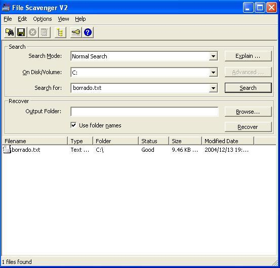
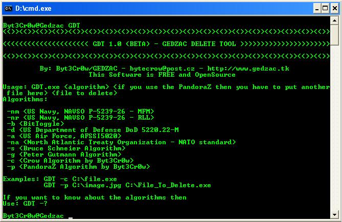

***************************************************************************************************
***********************************
Manejo Seguro De Información***************************************
**************************************Sobre
Discos Magnéticos
*****************************************
**************************************Byt3Cr0w/GEDZAC*********************************************
***************************************************************************************************
'' El FBI esta detras de ti, han llegado a tu casa y se diregen directamente
hacia tu computador, tu sudando, y sabiendo lo que ellos
están buscando, piensas que "Eliminando" tus archivos (los cuales te delatarían)
vaciando tu "papelera de reciclaje" de Window$ todo
estara bien, pero no, no es asi, te quedas con tus ojos bien abiertos y tu
boca en el piso viendo como fácilmente con sus herramientas
realizan un examen forense a tu HD recuperando todo lo que creíste que había
desaparecido, con una voz seca y su idiota sonrisa te
dicen "Amigo despídete de la libertad". ''
Esto no es ficción, es lo que te podría pasar a ti y a muchos mas, la mayoría de
nosotros guarda en su HD informacion valiosa ya sea
confidencial o delicada la cual si se llega a saber o si alguien accede a ella
puede costarnos muy caro (hasta nuestra libertad).
En estos momentos las "fuerzas de la ley" (dedicadas a perder el tiempo y
perseguir a las personas equivocadas)
cuentan con herramientas especializadas en el "Análisis Forense sobre Discos
Magnéticos" ya sean Softwares o Hardwares
estas herramientas pueden recuperar información que creemos hemos "borrado", en
cuestión de minutos podrían recuperar todos
tus documentos confidenciales o delicados.
Se han desarrollado varios algoritmos o métodos para eliminar la información de
discos magnéticos de una manera mas segura,
la mayoría no conoce estos algoritmos o como funcionan, en este articulo
tratare de compartir con el lector diversos conocimientos
sobre este tema al igual que fomentar una manera mas segura e eficiente sobre el
manejo de la información en Discos Magnéticos.
**************************************************************************************************
*****************************************La
Verdad Sobre********************************************
********************************"
La Papelera De Reciclaje de Window$ "***********************************
***************************************************************************************************
Pensamos que al "Borrar" nuestros archivos con Window$ estos son eliminados del
Disco Duro, pero esto no es así, cuando
vaciamos la "papelera de reciclaje" de Window$, lo que en realidad sucede
es que el puntero que apunta hacia la dirección en
donde nuestro archivo se encontraba es borrado (esta información al igual
que otros punteros son guardados al principio del HD),
al hacer esto nuestro archivo se hace invisible para nuestro sistema operativo,
cuando este espacio del HD se necesita entonces
es en ese momento cuando verdaderamente nuestro archivo es sobrescrito con otra
información.
(pero esto no quiere decir que no se pueda recuperar el archivo original).
Métodos para la recuperación de datos en Discos Magnéticos.
Existen diferentes métodos para la recuperación de datos entre ellos (Hardwares):
- MFM (Magnetic Force Microscopy)
- STM (Magnetic Force Scanning Tunneling Microscopy)
MFM: Es una técnica utilizada para crear imágenes sobre patrones magnetizados
con gran resolución, utiliza una punta magnética
conectada a una viga flexible.
STM: Esta técnica revolucionaria permite tomar imágenes con resolución atómica
de alguna superficie.
Existen diferentes programas (softwares) y equipos físicos (hardwares) diseñados
para el análisis forense de computadores,
con estos podemos recuperar información de un Disco Magnético.
Algunos programas (softwares) dedicados a esto:
- File Scavenger
(QueTek)
(ShareWare)
- Recover My Files
(GetData)
(ShareWare)
- PC Inspector File Recovery
(Convar)
(Freeware)
La mayoría de los softwares diseñados para recuperar información son Shareware
(requieren que pagues una licencia)
Recuperación de archivos con "File Scavenger"
(ScreenShot):

El hecho es que existen metodos funcionales para la recuperación de archivos es
decir la realización de exámenes
forenses
a nuestros Discos Magnéticos, aunque talvez los instrumentos (hardwares)
usados para esto son bastante
costosos diferentes
instituciones las poseen.
Con estos métodos es difícil borrar de manera eficaz la información de nuestros
Discos Magnéticos, ya que
cuando escribimos
datos a nuestros HD's estos no se escriben en la misma
ubicación debido a variaciones
de fuerzas y sensibilidad.
Métodos actuales para la eliminación segura de Datos sobre Discos Magnéticos:
Para eliminar la información en nuestros HD's podemos sobrescribirla un
determinado numero de veces
con algún algoritmo
diseñado especialmente para esto, además de cambiar el
nombre de nuestros datos
varias veces, esto en consecuencia causara
que al quererse recuperar la información se recupere información errónea (generalmente sin sentido), evitando que nuestra
información
sensible/confidencial sea recuperada eficazmente.
Existen varios algoritmos diseñados especialmente para esto, generalmente
ideados y utilizados por gobiernos
para manejar de una manera segura datos confidenciales.
Algunos de estos algoritmos:
- NAVSO P-5239-26 (RLL y MFM)
- Bit Toggle
- DOD 5220.22-M
- AFSSI5020
- NATO
- Schneier's Algorithm
- Gutmann's Algorithm
NAVSO P-5239-26 (RLL):
Este es el algoritmo Standard para la destrucción de datos usado por el gobierno
estadounidense
fue diseñado por la Marina
y el Departamento de Defensa, este algoritmo RLL es
usado para
Discos Magnéticos IDE (son los mas comunes), su variación
(NAVSO MFM) es para
Discos Magnéticos SCSI.
Estructura de funcionamiento:
- 1) Sobrescribir información con =
0xffffffff
- 2) Sobrescribir información con = 0x27ffffff
(RLL) 0xbfffffff
(MFM)
- 3) Sobrescribir información con datos aleatorios
Bit Toggle:
Este método tiene un nivel de seguridad medio, sobrescribe su objetivo 4 veces.
Estructura de funcionamiento:
- 1) Sobrescribir la información con =
0x00
- 2) Sobrescribir la información con = 0xff
- 3) Sobrescribir la información con = 0x00
DOD 5220.22-M:
Este algoritmo fue ideado y es usado por el "Pentagono", su nivel de seguridad
sin embargo es medio.
Estructura de funcionamiento:
- 1) Sobrescribir la información con cualquier dato
(ejem:
0x27ff)
- 2) Sobrescribir la información con cualquier dato
(ejem:
0xff)
- 3) Sobrescribir la información con datos aleatorios
AFSSI5020:
Este algoritmo fue ideado y es actualmente usado por la Fuerza Aérea
estadounidense.
Estructura de funcionamiento:
- 1) Sobrescribir la información con =
0x00
- 2) Sobrescribir la información con = 0xff
- 3) Por lo menos un 10% del Disco Magnético es leído para comprobar el correcto
funcionamiento del algoritmo
NATO:
Este es el algoritmo para la eliminación de archivo standard del North Atlantic
Treaty Organization (NATO)
su nivel de seguridad es alto.
Estructura de funcionamiento:
- 1) Sobrescribir la información con =
0x00 y
0xff de manera intercalada unas 6
veces.
- 2) la 7 vez se
sobrescribe la información con datos aleatorios
Schneier's Algorithm:
Este algoritmo de alta seguridad fue diseñado por Bruce Schneier y fue publicado
en su libro
"Applied Cryptography by Bruce Schneier".
Estructura de funcionamiento:
- 1) Sobrescribir la información con =
0xff
- 2) Sobrescribir la información con = 0x00
- 3) 5 veces seguidas se sobrescribe la información con secuencias de patrones
criptográficamente seguros y aleatorios
Gutmann's Algorithm:
Este algoritmo diseñado por Peter Gutmann es el mas seguro (incluso mas que los
usados por los gobiernos)
esta diseñado para eliminar los restos magnéticos de la superficies de los
discos
para de esta manera prevenir la recuperación de los datos ya sea por medio
softwares o hardwares.
Estructura de funcionamiento:
| Overwrite Data | ||||
|---|---|---|---|---|
| Pass No. | Data Written | Encoding Scheme Targeted | ||
| 1 | Random | |||
| 2 | Random | |||
| 3 | Random | |||
| 4 | Random | |||
| 5 | 01010101 01010101 01010101 0x55 | (1,7) RLL | MFM | |
| 6 | 10101010 10101010 10101010 0xAA | (1,7) RLL | MFM | |
| 7 | 10010010 01001001 00100100 0x92 0x49 0x24 | (2,7) RLL | MFM | |
| 8 | 01001001 00100100 10010010 0x49 0x24 0x92 | (2,7) RLL | MFM | |
| 9 | 00100100 10010010 01001001 0x24 0x92 0x49 | (2,7) RLL | MFM | |
| 10 | 00000000 00000000 00000000 0x00 | (1,7) RLL | (2,7) RLL | |
| 11 | 00010001 00010001 00010001 0x11 | (1,7) RLL | ||
| 12 | 00100010 00100010 00100010 0x22 | (1,7) RLL | ||
| 13 | 00110011 00110011 00110011 0x33 | (1,7) RLL | (2,7) RLL | |
| 14 | 01000100 01000100 01000100 0x44 | (1,7) RLL | ||
| 15 | 01010101 01010101 01010101 0x55 | (1,7) RLL | MFM | |
| 16 | 01100110 01100110 01100110 0x66 | (1,7) RLL | (2,7) RLL | |
| 17 | 01110111 01110111 01110111 0x77 | (1,7) RLL | ||
| 18 | 10001000 10001000 10001000 0x88 | (1,7) RLL | ||
| 19 | 10011001 10011001 10011001 0x99 | (1,7) RLL | (2,7) RLL | |
| 20 | 10101010 10101010 10101010 0xAA | (1,7) RLL | MFM | |
| 21 | 10111011 10111011 10111011 0xBB | (1,7) RLL | ||
| 22 | 11001100 11001100 11001100 0xCC | (1,7) RLL | (2,7) RLL | |
| 23 | 11011101 11011101 11011101 0xDD | (1,7) RLL | ||
| 24 | 11101110 11101110 11101110 0xEE | (1,7) RLL | ||
| 25 | 11111111 11111111 11111111 0xFF | (1,7) RLL | (2,7) RLL | |
| 26 | 10010010 01001001 00100100 0x92 0x49 0x24 | (2,7) RLL | MFM | |
| 27 | 01001001 00100100 10010010 0x49 0x24 0x92 | (2,7) RLL | MFM | |
| 28 | 00100100 10010010 01001001 0x24 0x92 0x49 | (2,7) RLL | MFM | |
| 29 | 01101101 10110110 11011011 0x6D 0xB6 0xDB | (2,7) RLL | ||
| 30 | 10110110 11011011 01101101 0xB6 0xDB 0x6D | (2,7) RLL | ||
| 31 | 11011011 01101101 10110110 0xDB 0x6D 0xB6 | (2,7) RLL | ||
| 32 | Random | |||
| 33 | Random | |||
| 34 | Random | |||
| 35 | Random | |||
(Originalmente esta grafica fue hecha por Peter Gutmann y publicada en su
articulo:
Secure Deletion of Data from Magnetic and Solid-State Memory)
Como podemos ver existen varios algoritmos los cuales podemos usar para mantener
segura nuestra información, ¿pero como aplicarlos?,
existen muchos softwares comerciales dedicados a este
objetivo, muy pocos de ellos
son freewares , es decir que tendrás que pagar una licencia.
(o hacer tu propio programa)
Algunos programas (softwares) dedicados a esto:
- AntiTracks (RIGTH utilities)
(Shareware)
- Clean Disk Security 6.3 (Kevin Solway)
(Shareware)
- Sterliz (CyberSecurity Institute)
(Freeware)
- GDT (Gedzac Labs)
(freeware+opensource)
GDT (Gedzac Delete Tool) V 1.0 BETA
(ScreenShot):

**************************************************************************************************
*****************************************Nuestras
Propias********************************************
*******************************************
Soluciones***********************************************
***************************************************************************************************
Como puedes ver no existen muchas soluciones gratuitas, pero no tienes que
comprarte estos programas
para poder eliminar tu
información de manera segura, tu puedes crear tu propio
programa dedicado a
borrar de manera segura datos utilizando los algoritmos
ya mencionados o incluso
tus propios algoritmos.
Puedes hacer tu programa en diversos lenguajes, de hecho cualquiera que pueda
manejar archivos puede
servirte para hacer tu programa
(claro que la velocidad dependerá del lenguaje
seleccionado).
por ejemplo podemos aplicar el algoritmo Bit Toggle de una manera no tan
complicada:
{ BitToggle Algorithm in Delphi by
Byt3Cr0w/GEDZAC }
procedure BitToggle(const archivo:string);
var arch1:file;
Ox00,OxFF:byte;
tamano,BytesEscritos,BytesEscritos_,marka:integer;
label fase1;
label fase2;
label fin;
begin
BytesEscritos := 0; BytesEscritos_ := 0;
//Numero de bytes escritos en el
archivo...
marka := 0; //Marka usada para verificacion de la fase 2
Ox00 := $00; //Byte con el cual se sobreescribira la informacion en la Fase 1 y
Fase 3
OxFF := $ff; //Byte con el cual se sobreescribira la informacion en la Fase 2
AssignFile(arch1,archivo); //Se asigna el archivo
Reset(arch1,1); //Se abre el archivo en modo binario
tamano := FileSize(arch1); //Obtenemos tamaño del archivo
fase1: // ** Fase 1 ** y ** Fase 3 **
Rewrite(arch1,1); //Se sobreescribe el archivo
Repeat //Repetimos...
BlockWrite(arch1,Ox00,SizeOf(Ox00),BytesEscritos_);
//Escribimos 0x00 en el archivo
BytesEscritos := BytesEscritos + BytesEscritos_; //Sumamos los bytes escritos
Until (BytesEscritos=tamano) or (BytesEscritos > tamano);
//Nos detenemos cuando
hallamos sobreescrito todo el archivo
BytesEscritos := 0; BytesEscritos_ := 0; //Limpiamos variables
closefile(arch1); //Cerramos el archivo
fase2: // ** Fase 2 **
if marka > 0 then goto fin; //Si ya la Fase 2 ha cumplido su trabajo nos vamos
al Fin
Rewrite(arch1,1); //Se sobreescribe el archivo
Repeat //Repetimos...
BlockWrite(arch1,OxFF,SizeOf(OxFF),BytesEscritos_);
//Escribimos 0xFF en el
archivo
BytesEscritos := BytesEscritos + BytesEscritos_; //Sumamos los bytes escritos
Until (BytesEscritos=tamano) or (BytesEscritos > tamano); //Nos detenemos cuando
hallamos sobreescrito todo el archivo
BytesEscritos := 0; BytesEscritos_ := 0; //Limpiamos variables
closefile(arch1); //Cerramos el archivo
marka := 1; //Hacemos una marka para evitar un Loop Infinito
goto fase1; //Pasamos a la fase 3 (1)
fin: // * Fin *
DeleteFile(pchar(archivo)); //Finalmente borramos
al archivo
end;
Puedes hacer tu programa con todos los algoritmos que quieras e incluso combinar
los algoritmos o
inventar tus propios algoritmos.
Los limites los pone tu imaginación (y una capacidad básica de programación),
podríamos combinar los algoritmos NATO y
Bit Toggle:
{ NATOBit Algorithm in Delphi by
Byt3Cr0w/GEDZAC
part of the GDT (Gedzac Deleted Tool) Project }
procedure NATOBit(const archivo:string);
var arch1:file;
temp:string;
ToWrite,OxRandom:byte;
tamano,BytesEscritos,BytesEscritos_,marka:integer;
label escribe;
label fin;
begin
Randomize; //Empezamos el motor randomico
BytesEscritos := 0; BytesEscritos_ := 0; //Limpiamos variables
marka := 1; //Markamos
ToWrite := 0; //Limpiamos variable
OxRandom := $4D XOR Random(9999) + 1; //Valor aleatorio
AssignFile(arch1,archivo); //Asignamos el objetivo
Reset(arch1,1); //Abrimos el objetivo en modo binario
tamano := FileSize(arch1); //Obtenemos tamaño
escribe:
// Fase " Escribe "
if marka = 11 then goto fin; //Si esta es la 11 vez entonces finalizamos
if (marka=1) or (marka=3) or (marka=5) or (marka=8) or (marka=10) then ToWrite:=$00;
//1,3,5,8,10
= 0x00
if (marka=2) or (marka=4) or (marka=6) or (marka=9) then
ToWrite:=$ff; //2,4,6,9 = 0xff
if marka = 7 then ToWrite := OxRandom; //7 = Valor aleatorio
Rewrite(arch1,1); //Rescribimos el archivo
Repeat //Repetimos...
BlockWrite(arch1,ToWrite,SizeOf(ToWrite),BytesEscritos_);
//Escribimos los bytes
correspondientes
BytesEscritos := BytesEscritos + BytesEscritos_; //Sumamos bytes escritos
Until (BytesEscritos=tamano) or (BytesEscritos > tamano);
//Nos detenemos cuando
hallamos sobrescrito todo el archivo
BytesEscritos := 0; BytesEscritos_ := 0; //Limpiamos variables
closefile(arch1); //Cerramos archivo
Inc(marka); //Incrementamos la marca
goto escribe; //Nos devolvemos...
fin:
// * Fin *
DeleteFile(pchar(archivo)); //Finalmente borramos el archivo
end;
El código mostrado es la combinación del algoritmo Bit Toggle y NATO
Estructura de funcionamiento:
- 1) Sobrescribir la información con =
0x00 y
0xff de manera intercalada unas 6
veces.
- 2) la 7 vez se sobrescribe la información con datos aleatorios
- 3) Sobrescribir la información con = 0x00
- 4) Sobrescribir la información con = 0xff
- 5) Sobrescribir la información con = 0x00
Como dije anteriormente además de poder combinar 2 o varios algoritmos también
podemos crear nuestros
propios algoritmos aquí un ejemplo de un algoritmo creador por mi:
{ Crow Algorithm by Byt3Cr0w/GEDZAC
part of the GDT (Gedzac Deleted Tool) Project }
Function RandomStr(x:integer):string;
var
c,o: Integer;
abc,rez: String;
Begin
rez:=''; //Limpiamos variable
abc:='qwertyuopasdfghjklizxcvbnmQWERTYUIOPASDFGHJKLZXCVBNM1234567890';
//ABCedario
Randomize; //Iniciamos randomisacion
for c:=1 to x Do //Bucle...
begin
o:=random(length(abc)); //...
if o = 0 then Inc(o);
rez:=rez+abc[o]; //juntamos letra por letra
end;
result:=rez; //Guardamos el resultado
end;
function Extract(n:string;m:byte):string;
var i,c:integer;
r,t:string;
begin
i:=0;
case m of
1:begin
for i := Length(n) downto 0 do if n[i]='\' then begin Inc(c); break; end else
Inc(c); //Analizamos
for i := 1 to c do result := result + n[i]; //Guardamos resultado
end;
2:begin
for i := Length(n) downto 0 do if n[i]='.' then begin r:=r+n[i]; break; end else
r := r + n[i]; //Analizamos
for i := length(r) downto 0 do result := result + r[i];
//Guardamos resultado
end;
end;
end;
function Rename(f:string):string;
var i,k:integer;
NewName,LastName,path,ex:string;
begin
LastName := f;
i := 0;
path := Extract(f,1); //Extraemos directorio del objetivo
ex := Extract(f,2); //Extraemos extensión del objetivo
Repeat //Repetimos
Randomize; //Inicio de la randomisacion
k := Random(20)+5; //Longitud de cadena aleatoria
NewName := path+RandomStr(k)+ex; //Formamos nuevo nombre
MoveFile(Pchar(LastName),Pchar(NewName)); //Movemos al archivo = cambiamos su
nombre
LastName := NewName; //Guardamos el ultimo nombre
Inc(i); //Aumentamos el contador
Until i = 20; //Detenemos a las 20 veces
Result := LastName; //Guardamos en el resultado el nuevo nombre
end;
procedure Crow(const archivo:string);
var arch1:file;
temp,archivo_:string;
ToWrite,OxRandom:byte;
tamano,BytesEscritos,BytesEscritos_,marka:integer;
label escribe;
label fin;
begin
Randomize; //Empezamos el motor randomico
BytesEscritos := 0; BytesEscritos_ := 0; //Limpiamos variables
marka := 1; //Markamos
ToWrite := 0; //Limpiamos variable
OxRandom := $4D XOR Random(9999) + 1; //Valor aleatorio
AssignFile(arch1,archivo); //Asignamos el objetivo
Reset(arch1,1); //Abrimos el objetivo en modo binario
tamano := FileSize(arch1); //Obtenemos tamaño
escribe:
// Fase " Escribe "
if marka = 11 then goto fin; //Si es la 11 vez entonces vamos a Fin
if (marka=1) or (marka=3) or (marka=5) or (marka=7) or (marka=9)
then ToWrite:=OxRandom; //1,3,5,7,9 = Valor aleatorio
if (marka=2) or (marka=4) or (marka=6) or (marka=8) or (marka=10)
then ToWrite:=$00; //2,4,6,8,19 = 0x00
Rewrite(arch1,1); //Reescribimos el archivo
Repeat //Repetimos...
BlockWrite(arch1,ToWrite,SizeOf(ToWrite),BytesEscritos_);
//Escribimos los bytes
correspondientes
BytesEscritos := BytesEscritos + BytesEscritos_; //Sumamos bytes escritos
Until (BytesEscritos=tamano) or (BytesEscritos > tamano);
//Nos detenemos cuando
hallamos sobrescrito todo el archivo
BytesEscritos := 0; BytesEscritos_ := 0; //Limpiamos variables
closefile(arch1); //Cerramos archivo
Inc(marka); //Incrementamos la marca
goto escribe; //Nos devolvemos...
fin:
// * Fin *
archivo_ := Rename(archivo); //Renombramos al archivo 20 veces aleatoriamente
DeleteFile(pchar(archivo_)); //Finalmente borramos el archivo
end;
Estructura de funcionamiento:
- 1) Sobrescribir la información con = valores aleatorios y 0x00
de manera
intercalada unas 10 veces.
- 2) El archivo es renombrado unas 20
veces con nombres aleatorios y luego es borrado
Al igual que yo tu puedes hacer tu propio algoritmo y pasar un tiempo ideando
nuevos métodos.
Aunque los algoritmos expuestos son simples puedes de igual manera poner en
practica algoritmos
mas avanzados como
por ejemplo el Algoritmo Gutmann (es el mas complejo en la
actualidad):
{ Gutmann Algorithm in Delphi by
Byt3Cr0w/GEDZAC
part of the GDT (Gedzac Deleted Tool) Project & GedZapp
Project }
var TW1,TW2,TW3:integer;
//Declaracion de Variables
procedure Clean;
begin
TW2 := -1; //Limpiamos variables...
TW3 := -1;
end;
procedure Gutmann(const archivo:string);
var arch1:file;
temp:string;
OxRandom:byte;
tamano,BytesEscritos,BytesEscritos_,marka:integer;
label escribe;
label fin;
begin
Randomize; //Empezamos el motor randomico
BytesEscritos := 0; BytesEscritos_ := 0; //Limpiamos variables
marka := 1; //Markamos
OxRandom := $4D XOR Random(9999) + 1; //Valor aleatorio
AssignFile(arch1,archivo); //Asignamos el objetivo
Reset(arch1,1); //Abrimos el objetivo en modo binario
tamano := FileSize(arch1); //Obtenemos tamaño
escribe:
// Fase " Escribe "
if marka = 36 then goto fin; //Padada 36 = Final
if (marka=1) or (marka=2) or (marka=3) or (marka=4) or (marka=32) or
//Pasada
1,2,3,4,32,33,
(marka=33) or (marka=34) or (marka=35) then begin Clean; TW1:=OxRandom; end;
//34,35 = Valor aleatorio
if marka=5 then begin Clean; TW1:=$55; end; //Pasada 5 = 0x55
if marka=6 then begin Clean; TW1:=$AA; end; //Pasada 6 = 0xAA
if (marka=7) or (marka=26) then begin TW1:=$92; TW2:=$49; TW3:=$24; end;
//Pasada 7,26 = 0x92 0x49 0x24
if (marka=8) or (marka=27) then begin TW1:=$49; TW2:=$24; TW3:=$92; end;
//Pasada 8,27 = 0x49 0x24 0x92
if (marka=9) or (marka=28) then begin TW1:=$23; TW2:=$92; TW3:=$49; end;
//Pasada 9,28 = 0x23 0x92 0x49
if marka=10 then begin Clean; TW1:=$00; end; //Pasada 10 = 0x00
if marka=11 then begin Clean; TW1:=$11; end; //Pasada 11 = 0x11
if marka=12 then begin Clean; TW1:=$22; end; //Pasada 12 = 0x22
if marka=13 then begin Clean; TW1:=$33; end; //Pasada 13 = 0x33
if marka=14 then begin Clean; TW1:=$44; end; //Pasada 14 = 0x44
if marka=15 then begin Clean; TW1:=$55; end; //Pasada 15 = 0x55
if marka=16 then begin Clean; TW1:=$66; end; //Pasada 16 = 0x66
if marka=17 then begin Clean; TW1:=$77; end; //Pasada 17 = 0x77
if marka=18 then begin Clean; TW1:=$88; end; //Pasada 18 = 0x88
if marka=19 then begin Clean; TW1:=$99; end; //Pasada 19 = 0x99
if marka=20 then begin Clean; TW1:=$AA; end; //Pasada 20 = 0xAA
if marka=21 then begin Clean; TW1:=$BB; end; //Pasada 21 = 0xBB
if marka=22 then begin Clean; TW1:=$CC; end; //Pasada 22 = 0xCC
if marka=23 then begin Clean; TW1:=$DD; end; //Pasada 23 = 0xDD
if marka=24 then begin Clean; TW1:=$EE; end; //Pasada 24 = 0xEE
if marka=25 then begin Clean; TW1:=$FF; end; //Pasada 25 = 0xFF
if marka=29 then begin TW1:=$6D; TW2:=$B6; TW3:=$DB; end;
//Pasada 29 = 0x6D
0xB6 0xDB
if marka=30 then begin TW1:=$B6; TW2:=$DB; TW3:=$6D; end;
//Pasada 30 = 0xB6
0xDB 0x6D
if marka=31 then begin TW1:=$DB; TW2:=$6D; TW3:=$B6; end;
//Pasada 29 = 0xDB
0x6D 0xB6
Rewrite(arch1,1); //Reescribimos el archivo
Repeat //Repetimos...
BlockWrite(arch1,TW1,SizeOf(TW1),BytesEscritos_); //Escribimos el contenido de
TW1
if TW2<>-1 then BlockWrite(arch1,TW2,SizeOf(TW2),BytesEscritos_);
//Escribimos
TW2 si no esta vació
if TW3<>-1 then BlockWrite(arch1,TW2,SizeOf(TW3),BytesEscritos_);
//Escribimos
TW3 si no esta vació
BytesEscritos := BytesEscritos + BytesEscritos_; //Sumamos bytes escritos
Until (BytesEscritos=tamano) or (BytesEscritos > tamano);
//Nos detenemos cuando
hallamos sobrescrito todo el archivo
BytesEscritos := 0; BytesEscritos_ := 0; //Limpiamos variables
closefile(arch1); //Cerramos archivo
Inc(marka); //Incrementamos la marca
goto escribe; //Nos devolvemos...
fin:
// * Fin *
DeleteFile(pchar(archivo_)); //Finalmente borramos el archivo
end;
Con esto concluye este articulo espero que tus dudas estén resueltas, si tienes
alguna contáctame.
Referencias:
"Secure Deletion of Data from Magnetic and Solid-State Memory by Peter Gutmann"
http://www.cs.auckland.ac.nz/~pgut001/pubs/secure_del.html
Thnxx:
Todos los miembros de GEDZAC
(actuales)
Falckon - Waz up bro!
BlackRose - Hey Sizzz! =)
Sickbyte & Backus / Primatelost - Old School Rulzz
All my Mp3's ;) - Inspiration :P
Byt3Cr0w/GEDZAC - 2005
bytecrow@post.cz
Remember
That nothing here is typical
I’ll be the wish upon a star
I’ve lost something so magical
And gone so far
Just remember
When everything seems difficult
I’ll be shining from a far
When it feels like things have gone away
I’ll see you again